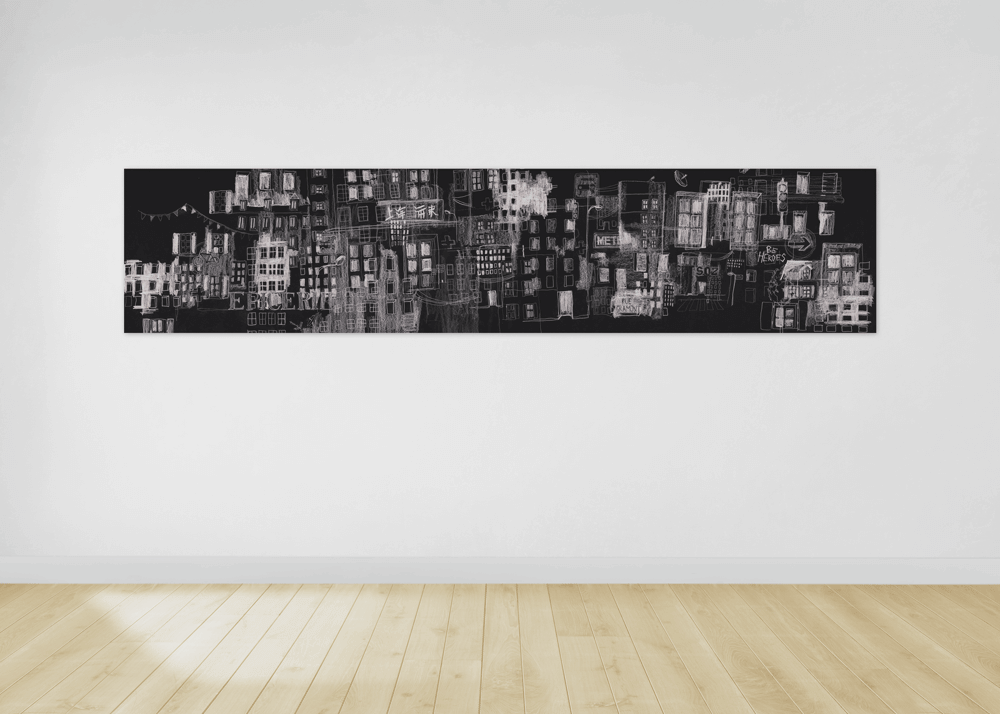

La ville, illustration, 2016.
Fusain, 40 × 200 cm.
« De l'éclat dans l'ombre des fenêtres,
Des regards assoupis se ferment sous la douceur sombre
des bruits de la ville »— Aline Louvard
La ville est une plongée dans une récolte visuelle de ce qui constitue une ville.